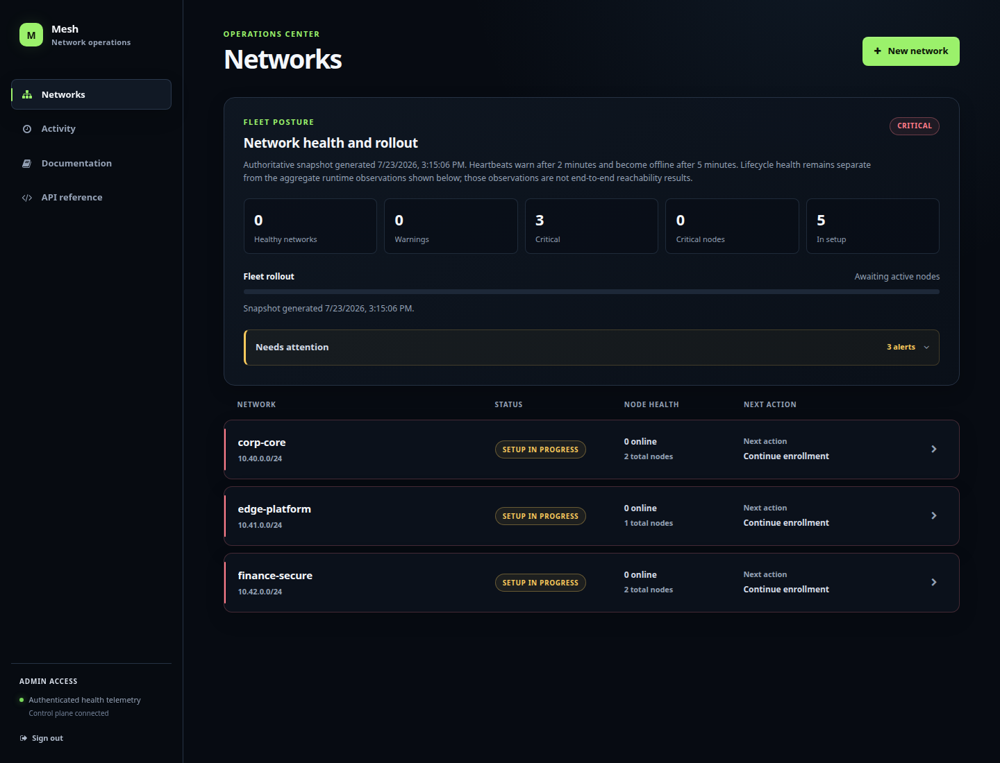
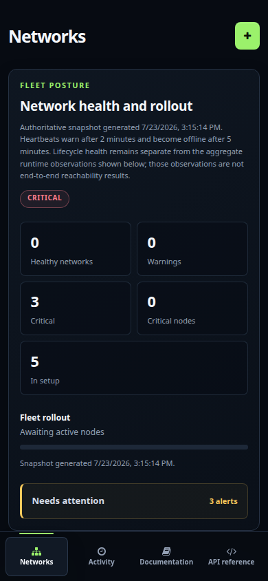

Mesh manages Nebula certificates, signed configuration, firewall
policy, and fleet status. Operators can see what has converged and
what still needs proof.
Mesh keeps trust, policy, topology, and runtime evidence in the same
workflow without pretending that a heartbeat proves application
reachability.
01
Trust domains
Each network has its own identity.
Each network receives its own encrypted Nebula certificate
authority and configuration-signing identity. Node private keys
are generated on the target machine.
EnrollRenewRotateRevoke
02
Fleet posture
Check current state and its supporting evidence.
Track exact signed revisions, certificate generations, lifecycle
heartbeats, placement diversity, and bounded runtime observations.
03
Least privilege
Apply least-privilege firewall policy.
Target Nebula firewall rules by security group, named node, or peer
address and preview each node's effective policy before rollout.
04
Controlled change
Roll out firewall changes to canaries.
Stage firewall changes to selected nodes, require exact convergence,
and pause, promote, or roll back with an auditable workflow.
05
Connectivity
Manage DNS, relays, and routed subnets.
Manage lighthouse DNS, native relay selection, routed-subnet
ownership, and weighted route policies as signed network state.
Fleet overviewCurrent alerts


Operator workflow
Review fleet risk, then open the affected network.
The fleet view surfaces convergence and attention items first. Each
network then opens into a topology-first workspace with one explicit
next action and permission-aware controls.
01
Read the fleet
Review authoritative alerts, rollout posture, and network state.
02
Enter one network
Inspect topology, node lifecycle, and the next incomplete setup stage.
03
Make one bounded change
Preview, canary where supported, and wait for exact signed-state evidence.
04
Verify real traffic
Use packet and application checks before treating rollout as complete.
Security boundaries
Mesh separates control-plane, node, browser, and release trust.
Each boundary can fail closed and be reviewed independently.
Nodes generate their Nebula private keys locally; the server receives only the public identity.
02
Configuration is signed
Monotonic revisions arrive as complete immutable bundles and activate atomically.
03
Roles constrain operations
Viewer, Operator, and Admin roles keep routine work separate from trust-domain authority.
04
Revocation has proof
Credential cutoff, certificate blocklisting, signed rollout, and real packet verification are separate steps.
Deployment
Choose a deployment that matches the available evidence.
Use the JSON-backed control plane for contained deployments. Use
the PostgreSQL preview only while validating multiple application
replicas. Accept production only after the environment-specific
gates pass.